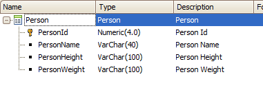
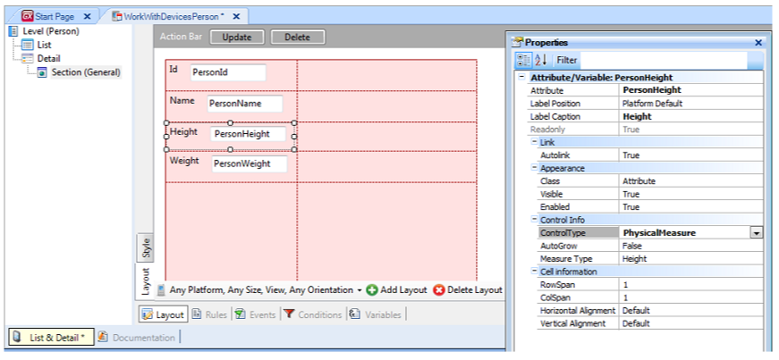
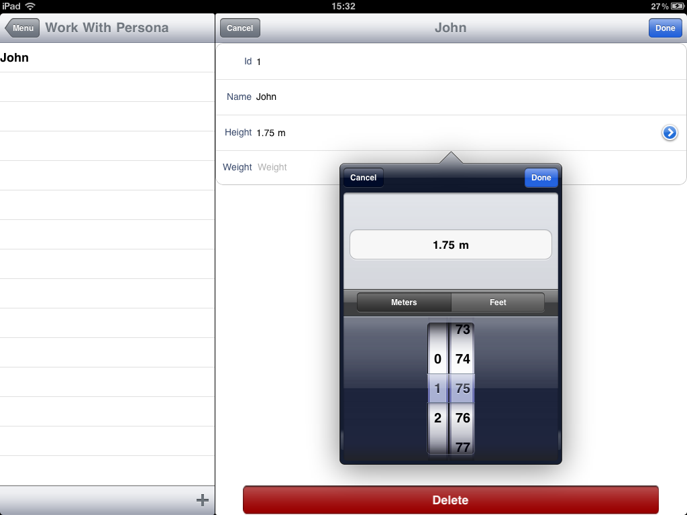
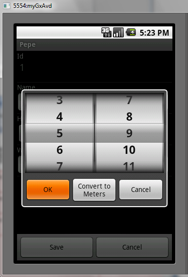

HowTo: Using the SD PhysicalMeasures Control
The Physical Measures control lets you to easily manage physical measures such as height, weight, volume, temperature, etc.
It also enables each user of the application to choose in which metric system he wants to work.
This control applies to attributes and variables.
Sample
Start by defining the following Transaction object with the Work With pattern applied.

Once you have applied the Work With pattern you need to enable the Physical Measures control. To do this, go to Section (General), select the attribute, and set its Control Type property to "PhysicalMeasure" value. You must do this both in the View and Edit layouts.

This will enable Measure Type property, as seen in the image. For this example, choose Height.
Now, just hit F5.
Doing this, the user of the application will have the possibility to choose the unit for the height (feet or meters) at the moment of insert or update the value.
Snapshots
In iPad

(The field above the wheels shows the current value, not the one selected in the wheels.)
In Android

Availability
This control is only supported in Apple and Android devices.
Videos

| Backlinks | |
| Control Type property | Category:Control Types |
| Toc:Native Mobile Applications Development |